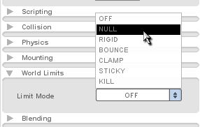
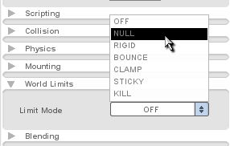

Figure 5.1.5

Figure 5.1.6

Figure 5.1.7
Torque 2D - Fish Demo Tutorial - Part 5
5. Making our Fish Swim Back and Forth
5.1 Setting up our fish's world limit
Now that our fish is swimming in one direction, we need it to swim from one side of the level to the other. We can accomplish this easily using our fish's world limit. The world limit is a bounding box that we can define visually in our Level Builder. This is the world bounds for our fish object. We can also make it send a script callback to our fish class when it reaches the edge of its world limit. A script callback says to the engine, "call this script whenever this event happens". (This is different from a script execution, which is done to tell T2D where scripts we need are located.) By attaching a script callback to the world limit, we tell our fish to swim back and forth.
So, change the fish's world limits extend
slightly outside the camera (as shown in Figure 5.1.3). Our purpose for this is to give enough space between the camera limit and the world limit for the entire width of the fish to fit, that way we don't see it turn around.
|
|
Now that the world limit boundary is set, we need to configure the settings for it. If you haven't already exited out of the World Limit Boundary Tool, click on the Selection Tool in the top toolbar (as shown in Figure 5.1.4).
Figure 5.1.4
|
|
 |
|
|
|
5.2 Scripting our world limit response
Now that our world limit is properly set up in the Level Builder, we can add the script to set the proper response. Open your game.cs script file in again (MyFishDemo/game/gameScripts) folder.
Add the following function to the end of the file.
function FishClass::onWorldLimit(%this, %mode, %limit)
{
switch$ (%limit)
{
case "left":
%this.setLinearVelocityX(20);
%this.setFlipX(false);
case "right":
%this.setLinearVelocityX(-20);
%this.setFlipX(true);
}
}
Code Sample 5.2.1
Since we checked the Callback option in the Level Builder, this function will get called when our fish has reached its world limit. Two values are passed to this function. %mode represents the mode setting for the world limit. In this case, the NULL mode. The %limit value represents which world limit it has reached, either right, left, top, or bottom. We start our function out with a "switch$ (%limit)" statement. This takes the value of %limit and then lets you compare it to different situations, or cases. It allows you to have different things happen based on those cases. As you can see, we continue with the statement and compare it to "left" and "right". The "$" after "switch" means that we are going to be comparing string values, such as "left" and "right" instead of numerical values like "1" and "5". In the case where our fish has reached its "left" world limit, we do two things. First, we set its linear velocity along the X axis (horizontal) to 20. This should send our fish to the right. We also call a function setFlipX() passing it a "false" value. This ensures our fish is facing the default direction (which, if you remember, is to the right). If our fish hits the right world limit, it calls the linear velocity function along the X axis, this time setting it to negative 20. This causes our fish to go left. We also call the same setFlipX() function, though we pass it "true" this time. This should flip our fish animation to face the left side, so it will appear to be swimming in the proper direction (we don't want moonwalking fish).
Save your game.cs script file and click the Play Level button. You should see your fish swim back and forth! (as shown in Figure 5.2.1)
Figure 5.2.1